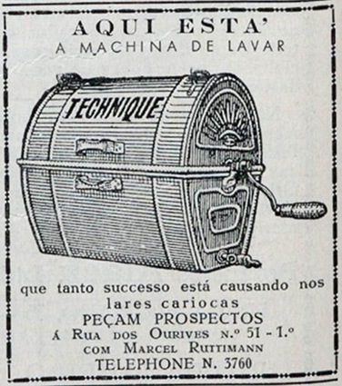

Carrossel de imagens
Clique nas setas para navegar.
Anúncio de aparelho de rádio, publicado na revista
A Cigarra
, em 1929.
Crédito
: REPRODUÇÃO/
A CIGARRA
Anúncio de carro, publicado no jornal
Correio Paulistano
, em 1936.
Crédito
: REPRODUÇÃO/
CORREIO PAULISTANO

Anúncio de máquina de lavar, publicado na revista
O Cruzeiro
, em 1929.
Crédito
: REPRODUÇÃO/
O CRUZEIRO
Anúncio de sabonetes, publicado na revista
O Cruzeiro
, em 1929.
Crédito
: REPRODUÇÃO/
O CRUZEIRO
![Imagem de um anúncio em preto e branco em que se lê, no topo e em letras grandes: ‘Electrola Radio Victor’. Abaixo, há uma ilustração com quatro mulheres, uma delas manipulando um grande aparelho, outra sentada e duas em pé. Abaixo, lê-se: ‘Radio-Victor-Electrola RE-45’. Mais abaixo, em fonte menor: ‘Aqui está um maravilhoso instrumento para o vosso lar... dois instrumentos em um – O Novo Radio-Victor e a Electrola juntos num bello móvel. Não importa o que pedirdes: este maravilhoso aparelho vol-o dará. Toda a musica do passado e do presente, por meio dos discos – todas as distracções de uma bôa irradiação, por seu poderoso RADIO. E’ bello no aspecto e moderado no preço. Vel-o é desejal-o. Vinde ouvil-o, o mais breve possível !’. Mais abaixo: Distribuidores geraes PAUL J. CHRISTOPH CO’PANY', ‘Ouvidor, 98 RIO’, ‘S. Bento, 35 S. PAULO’.](../resources/images/enriquecimentos/carrossel/carrossel_s715146qa/g24_8ano_s715146Qa_1a.jpg)

![Imagem de um anúncio com a ilustração de uma fada sobre uma caixa com líquido e rosas. No topo da imagem, está escrito em letras grandes: ‘OLIVAN e ROSAN Sabonetes de Belleza PERFUMES 6 DIFFERENTES’. Do lado esquerdo da ilustração, lê-se: ‘Aquelles que sempre usaram sabonetes communs, impuros e mal fabricados, ficarão surpreendidos com a qualidade incomparável e’. Ao final do texto, uma seta indica o outro lado da ilustração, em que se lê: ‘os 6 perfumes inalteráveis dos sabonetes ‘ROSAN’ e ‘OLIVAN’.](../resources/images/enriquecimentos/carrossel/carrossel_s715146qa/g24_8ano_s715146Qa_1d.jpg)